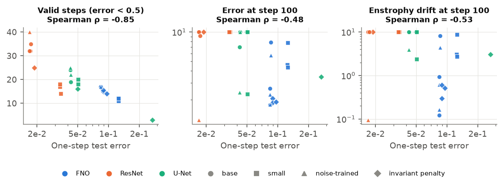
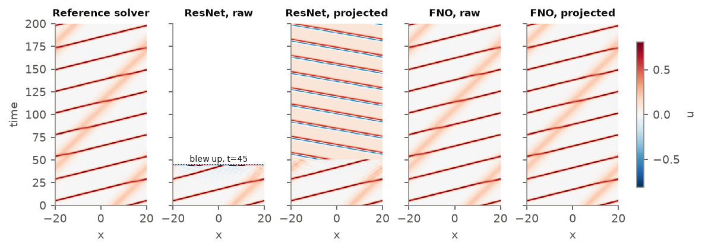
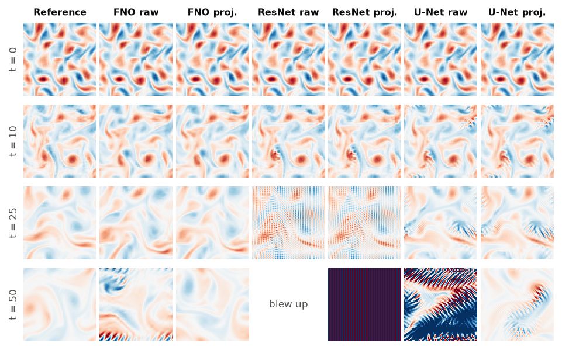
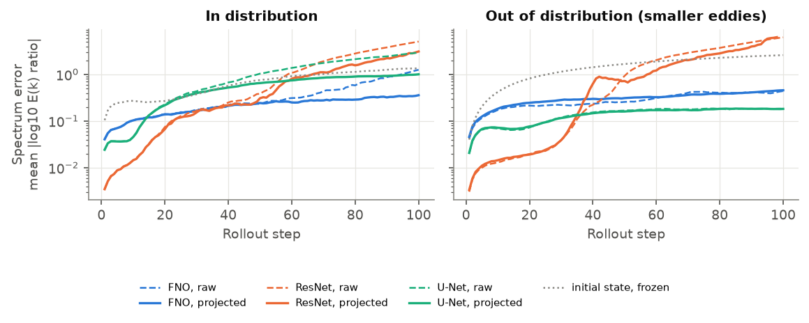

A study of one-step-trained surrogates for KdV solitons and 2D turbulence: one-step error does not rank long rollouts, restoring the invariants repairs them, and the invariants left unrestored flag failures without a reference solution
Neural surrogates promise to replace expensive PDE solvers: train a network to map the state at time t to the state at t + Δt, then apply it repeatedly. They are usually trained and compared on one-step error, while in use they are rolled out for hundreds of steps on their own predictions. Small errors compound, the state drifts off the set of physically reachable states, and the surrogate, which has never seen such inputs, eventually diverges [3, 4]. A recent survey of the fluid-PDE literature found that weak baselines and short evaluation horizons make many such models look better than they are [9].
Physics offers a check that the reference solution does not: conserved quantities. By Noether's theorem every continuous symmetry of a Hamiltonian system gives a conserved quantity, and dissipative systems obey exact budgets for how fast such quantities decay. A surrogate's rollout can be tested against these laws at any time, without knowing the true solution. This report asks three questions of a controlled population of surrogates:
Everything, from reference solvers to figures, runs on one laptop GPU in a few hours; no dataset is downloaded.
KdV. The Korteweg–de Vries equation ut + 6uux + uxxx = 0 on a periodic domain of length 40 with 128 points. Solitons travel at a speed proportional to their height and pass through each other unchanged. KdV is integrable and conserves infinitely many quantities; we use the first three, mass M = ∫u, momentum P = ∫u² and energy H = ∫(½ux² − u³). The solver is pseudo-spectral with exponential time differencing (ETDRK4, contour-integral coefficients [5]), Δt = 0.005, 2/3 dealiasing. Training starts are sums of 1–4 solitons with speeds 0.3–1.5; the out-of-distribution (OOD) starts are smooth random fields, which break up into solitons and radiation. Snapshots every 0.5 time units; training trajectories have 100 steps, test and OOD trajectories 400.
2D turbulence. Incompressible Navier–Stokes in vorticity form, ωt + u·∇ω = ν∆ω, on [0, 2π)² at 64², ν = 10−3, decaying from random initial fields with an energy peak at wavenumber 4 (OOD: 8, i.e. smaller eddies). Pseudo-spectral RK4 with an integrating factor, Δt = 0.01, after a spin-up of 2 time units. Mean vorticity is conserved, and the kinetic energy E and enstrophy Z = ½⟨ω²⟩ obey exact budgets dE/dt = −2νZ and dZ/dt = −2νP, with P the palinstrophy ½⟨|∇ω|²⟩. Snapshots every 0.5; training trajectories have 20 steps, test and OOD trajectories 100. On the reference data every invariant or budget holds to 10−4 relative error or better.
Three architectures common in the literature: a Fourier neural operator (FNO [1]), a periodic ResNet [10] and a U-Net [11], each predicting the increment ut+1 − ut (residual form). Per architecture we train a small and a base size, plus two standard stabilisers at base size: Gaussian input noise of 1% of the state's standard deviation (as in the pushforward-trick literature [3]) and a soft invariant penalty (relative mismatch of mass and momentum, or mean and energy, weight 0.1, in the spirit of physics-informed losses [12]). Models are trained only on one-step pairs (AdamW, one-cycle schedule, 20 epochs for KdV and 30 for turbulence). For KdV this gives 36 models (12 configurations, three seeds). Turbulence training is costlier, so there we trained every FNO configuration and the small and base ResNets with three seeds, the other two ResNet variants with one seed, and every U-Net configuration with two seeds: 28 models. One of them (U-Net with the penalty, seed 0) trained badly (one-step error 0.27, against 0.05 for its twin); we keep it.
For every model we roll out all test and OOD starts with no projection (raw) and with projection (projected), and record relative L2 error against the reference, invariant drift, blow-up (any value above 10³ or non-finite, after which the rollout counts as failed), and valid steps, the number of steps before the error first exceeds 0.5. KdV drift is |I(t) − I(0)| divided by a scale that cannot vanish (∫|u0|, ∫u0², ∫(½u0,x² + |u0|³)). Turbulence drift is the residual of each budget integrated with the trapezoid rule, relative to the initial value. None of these drifts uses the reference solution.
On KdV, one-step error ranks the models almost perfectly at short horizons (Spearman ρ = 0.96 with the error at step 1 and 0.93 at step 10), but the correlation fades to 0.37 by step 50, to zero by step 100, and turns negative by step 400 (ρ = −0.22; Figure 1). The reason is visible in the figure: the ResNets have the lowest one-step error of all 36 models (1.6 × 10−4 at base size, against 2.6 × 10−4 for the FNO), yet two thirds of their test rollouts blow up within 400 steps, while no FNO rollout does. Model selection by one-step error would pick the worst model for long rollouts.

Turbulence shows the reversal in a different form (Figure 2). The flow is chaotic, so every surrogate decorrelates from the reference within 10–40 steps, and over that window one-step error is a good guide: lower one-step error means more valid steps (ρ = −0.85). By step 100 it has flipped: the correlation between one-step error and error is −0.48, so the more accurate a model is for one step, the worse it tends to end. The ResNets are the most accurate early (median one-step error 0.018, against 0.047 for U-Nets and 0.087 for FNOs) and are the ones whose rollouts explode: 43% of ResNet rollouts have blown up by step 100, against none of the FNO rollouts.
| Configuration | Params | One-step | Error @100 | Error @400 | Projected @400 | Valid steps | Projected |
|---|---|---|---|---|---|---|---|
| FNO small | 58k | 6.6e-04 | 0.052 | 0.873 | 0.394 | 278 | 401 |
| FNO base | 418k | 2.6e-04 | 0.030 | 0.394 | 0.078 | 401 | 401 |
| FNO base + noise | 418k | 7.1e-04 | 0.059 | 0.715 | 0.258 | 318 | 401 |
| FNO base + penalty | 418k | 2.6e-04 | 0.029 | 0.385 | 0.098 | 401 | 401 |
| ResNet small | 42k | 3.3e-04 | 0.397 | ∞ | 1.136 | 105 | 218 |
| ResNet base | 329k | 1.6e-04 | 0.080 | ∞ | 1.226 | 126 | 176 |
| ResNet base + noise | 329k | 9.9e-04 | 0.046 | 0.467 | 0.206 | 401 | 401 |
| ResNet base + penalty | 329k | 1.6e-04 | 0.068 | ∞ | 1.217 | 134 | 189 |
| U-Net small | 163k | 7.0e-04 | 0.051 | 0.853 | 0.255 | 304 | 401 |
| U-Net base | 650k | 4.2e-04 | 0.029 | 0.362 | 0.182 | 401 | 401 |
| U-Net base + noise | 650k | 6.9e-04 | 0.051 | 0.629 | 0.200 | 348 | 401 |
| U-Net base + penalty | 650k | 4.3e-04 | 0.027 | 0.332 | 0.147 | 401 | 401 |
The training tricks behave inconsistently across architectures (Table 1). Input noise rescues the ResNet (from 126 valid steps to all 400), but nearly doubles the long-horizon error of the FNO and U-Net and costs them valid steps. The soft invariant penalty changes almost nothing: the networks already match mass and momentum to within their one-step error on the training distribution, so the penalty is nearly zero where it is evaluated and offers no protection where rollouts drift.
Given a predicted state u and target values cj for differentiable quantities Ij, the Noether projection solves
min ‖δ‖² subject to Ij(u + δ) = cj,
with a few Gauss–Newton steps δ = JT(JJT)−1(c − I(u)), where J is the Jacobian of the quantities with respect to the state (one backward pass per quantity; four iterations, batched). For KdV we restore mass and momentum to their initial values and leave energy free. For turbulence we restore the mean vorticity and impose the energy budget for the step, Et+1 = Et − νΔt(Zt + Zt+1), with Zt+1 taken from the raw prediction, and leave the enstrophy budget free. The projection needs no retraining and adds a few milliseconds per step. The quantity left free is the one we later use as an alarm.

Projection helps every one of the 36 models on in-distribution rollouts from step 100 on. The median ratio of projected to raw error falls from 0.89 at step 10 to 0.57 at step 50 and 0.36 at step 400, i.e. a 64% reduction (Figure 3). For the base FNO the error at step 400 drops from 0.39 to 0.08. The share of models whose median rollout blows up drops from 24% to 2%, and the median number of valid steps rises from 350 to all 401. Strikingly, the energy, which is never projected, drifts about 8× less (median ratio 0.13 at step 400, lower in every model where both are finite): restoring two invariants keeps the state near the manifold of physical solutions, where the third one also holds. Projection does not save the ResNets, though; it only delays them (126 → 176 valid steps at base size). Their errors are not mainly in the conserved directions.

Out of distribution, every model fails from the first step (median one-step error 0.67 on random fields, against 4 × 10−4 in distribution): these starts lie outside anything the models have seen. Here projection does what it can and no more. It keeps 94% of the rollouts finite, against 22% for raw rollouts, but the bounded rollouts are wrong (median error 1.4), and where both are finite the projected error is typically 30% higher than raw. Projection is a repair for drift, not for a model that has not learned the dynamics.

Pointwise error is a blunt instrument here. Once a rollout has decorrelated from the reference, its error settles near √2 ≈ 1.4 (two unrelated fields with the same energy), so errors well above that mean the rollout has gained energy or blown up. Projection leaves the first 20 steps essentially unchanged (median ratio of projected to raw error 0.98) but halves the error by step 100 (ratio 0.54; lower in 86% of models). Of the 28 models, 23 have a median error above 2 at step 100 without projection and 7 with it (Figure 5). It rescues the U-Nets (median error at step 100 from 9.0 to 1.7; blow-ups from 8% to none) and the FNOs (2.4 to 1.5), whose failure is energy pile-up at the grid scale (Figure 6). The held-out enstrophy budget is violated about 8× less (median ratio 0.12).
Projection does not rescue the ResNets: 39% of their rollouts still blow up by step 100, against 43% raw. Their failure is a grid-scale checkerboard (Figure 6, t = 25), which carries enstrophy but almost no kinetic energy, because energy weights each wavenumber by 1/k². An energy constraint cannot see it, and the enstrophy budget, which can, is violated by up to four orders of magnitude.

Statistics after predictability is lost. The relevant question for a chaotic system is whether the rollout keeps the right statistics. We measure the error of the kinetic-energy spectrum, the mean over shells k = 1–21 of |log10(Epred(k)/Eref(k))|, for the base models (Figure 7). As a yardstick, simply keeping the initial state gives 1.36 at step 100, because the true spectrum decays. Projected FNO and U-Net rollouts keep the spectrum much closer than that: at step 100 the FNO's spectrum error falls from 1.26 raw to 0.36, the U-Net's from 2.94 to 1.00. So once the energy budget holds, the surrogate's statistics stay physical long after its pointwise forecast has expired. The ResNets end far off either way (5.1 raw, 3.1 projected).

Projecting more is not better. If we also impose the enstrophy budget, nothing is held out. The ResNets then stop blowing up (no blow-ups; median error at step 100 falls from 342 to 1.1), and by pointwise error every architecture looks better than with the energy budget alone (1.1–1.3). But the spectrum gets worse: the ResNet's spectrum error rises to 4.8 and the U-Net's from 1.00 to 4.4, so on average each shell is off by four orders of magnitude. The constraints hold, so the state looks plausible by every quantity being enforced, yet the flow is wrong, and no conserved quantity is left to raise the alarm. Projection and monitoring compete for the same invariants, and keeping one back is worth more than a cosmetically better error.
Restoring some invariants leaves the others free to reveal trouble. We pool the per-trajectory values of all models and ask how well each label-free signal, measured at step h, separates rollouts whose error exceeds 0.3 from the rest (AUROC; 0.5 is chance), both now (error at step h) and later (error at the final step, predicted from the signal at step h). The baseline is the disagreement between a model and its twin (same configuration, another seed), which needs a second network and a second rollout. A third setting pools in-distribution and OOD starts, as a deployed monitor would see them.

| Rollouts | Signal | Step 50 | Step 100 | Step 200 | Now, step 400 |
|---|---|---|---|---|---|
| in distribution, raw | energy drift | 0.78 | 0.85 | 0.89 | 0.89 |
| in distribution, raw | momentum drift | 0.76 | 0.84 | 0.87 | 0.89 |
| in distribution, raw | twin-model disagreement | 0.71 | 0.75 | 0.77 | 0.76 |
| in distribution, projected | energy drift | 0.79 | 0.88 | 0.93 | 0.92 |
| in distribution, projected | twin-model disagreement | 0.78 | 0.83 | 0.87 | 0.87 |
| test + OOD, raw | energy drift | 0.90 | 0.93 | 0.95 | 0.95 |
| test + OOD, raw | momentum drift | 0.89 | 0.93 | 0.94 | 0.95 |
| test + OOD, raw | twin-model disagreement | 0.87 | 0.89 | 0.88 | 0.87 |
| test + OOD, projected | energy drift | 0.93 | 0.96 | 0.98 | 0.97 |
| test + OOD, projected | twin-model disagreement | 0.93 | 0.94 | 0.95 | 0.95 |
On KdV the held-out energy drift is as good as the twin model or better in every setting (Figure 8, Table 2). On projected in-distribution rollouts it reaches AUROC 0.92 at step 400, against 0.87 for the twin, and as an early warning it predicts at step 200 which rollouts will fail by step 400 with AUROC 0.94, against 0.87. On raw rollouts the gap is wider (0.89 against 0.76 at step 400). One reason is that twins fail in correlated ways: two ResNets that both blow up agree with each other far longer than either agrees with the truth. When OOD starts are mixed in, every signal improves, and energy drift on projected rollouts reaches 0.97. Mass and momentum drift are also good alarms on raw rollouts. After projection they carry no signal by construction, so which quantities to project and which to keep as alarms is a design choice.
Turbulence needs a different target. The flow is chaotic, so by step 20 more than 90% of all rollouts exceed an error of 0.3 whatever the model, and that label stops separating good rollouts from bad. On that target, while it still has both classes (steps 5–20), the twin model is the better signal (AUROC 0.90–0.99, against 0.77–0.93 for the budgets), as expected: once two chaotic rollouts have diverged from the truth they have also diverged from each other. The failure that matters after predictability is lost is a rollout that becomes unphysical. A decorrelated field with the right energy has relative error near √2 ≈ 1.4; we call a rollout unphysical when its error exceeds 2, which happens through energy pile-up or blow-up. On that target the budgets are far better than the twin (Figure 9, Table 3). The held-out enstrophy budget identifies unphysical projected rollouts with AUROC 0.98–1.00 from step 20 to step 100, while twin disagreement falls to 0.65. On raw rollouts twin disagreement drops to chance (0.46 at step 100), because twins that both blow up or both pile up energy agree with each other.

| Rollouts | Signal | Step 10 | Step 20 | Step 50 | Now, step 100 |
|---|---|---|---|---|---|
| in distribution, raw | enstrophy budget | 0.35 | 0.65 | 0.85 | 0.98 |
| in distribution, raw | energy budget | 0.47 | 0.66 | 0.87 | 0.98 |
| in distribution, raw | twin-model disagreement | 0.43 | 0.56 | 0.53 | 0.46 |
| in distribution, projected | enstrophy budget | 0.18 | 0.63 | 0.88 | 0.98 |
| in distribution, projected | twin-model disagreement | 0.19 | 0.46 | 0.68 | 0.65 |
| test + OOD, raw | enstrophy budget | 0.47 | 0.61 | 0.76 | 0.86 |
| test + OOD, raw | energy budget | 0.49 | 0.60 | 0.83 | 0.94 |
| test + OOD, raw | twin-model disagreement | 0.48 | 0.60 | 0.58 | 0.45 |
| test + OOD, projected | enstrophy budget | 0.21 | 0.52 | 0.89 | 0.99 |
| test + OOD, projected | twin-model disagreement | 0.16 | 0.45 | 0.71 | 0.79 |
The early warning is limited: at step 10, before anything has gone wrong, no signal predicts which rollouts will turn unphysical (AUROC 0.2–0.5). Values below 0.5 mean that early budget drift is, if anything, larger in the rollouts that will survive. The FNOs, which drift early but never blow up, account for much of this. From step 50 the enstrophy budget gives a useful warning (0.85–0.89) while twin disagreement does not (0.53–0.71).
Two systems, both periodic and both with simple, known invariants. Many systems of interest (with boundaries, forcing or unknown conserved quantities) offer weaker checks; the projection then needs a budget like the one used for turbulence, which requires knowing the dissipation. The zoo spans three architectures at modest size; larger or newer surrogates (for example diffusion-based refiners [4]) may fail differently. Pooled AUROCs mix models of very different quality, so part of what they measure is telling good models from bad ones; that is what a deployed monitor would face, but the per-model picture is weaker. For turbulence the zoo is smaller (28 models, with one to three seeds per configuration). The "unphysical" threshold (error above 2) is a choice, but the comparison does not depend on it: for thresholds from 1.6 to 5 the enstrophy budget scores AUROC 0.89–1.00 at step 100 and the twin model 0.42–0.72.
Long-rollout instability of neural PDE solvers is well documented [3, 4, 9]; remedies include training on noisy or self-generated inputs [3], refinement with diffusion-like denoising [4] and learned correction of a coarse solver [7]. Building conservation into the architecture is an alternative to post-hoc projection: Hamiltonian networks [2] and divergence-free parametrisations [13] conserve exactly by construction, and ProbConserv [12] imposes conservation laws on a probabilistic model's output with a closely related constrained update. Projection onto invariant manifolds is classical in geometric numerical integration [6]. Our contribution is to measure, across a controlled zoo, how much a minimal post-hoc projection helps and where it fails, and to show that the unprojected invariants make a cheap, reference-free alarm that is competitive with ensembles.
Conservation laws are cheap to check and are rarely used when neural surrogates are evaluated or deployed. Across 64 models and two systems, one-step error was a poor and sometimes inverted guide to long-horizon behaviour, a minimum-norm projection onto a few invariants removed most of the long-horizon error where the failure lay in those invariants, and the invariants deliberately left free identified failing rollouts without a reference solution, as well as or better than a second model. The practical recipe is to split the known invariants. Project some of them to keep the rollout physical, keep the others as alarms, and report long-horizon and statistical metrics alongside one-step error. All code, data generation and figures are in the repository and run on a single laptop GPU.